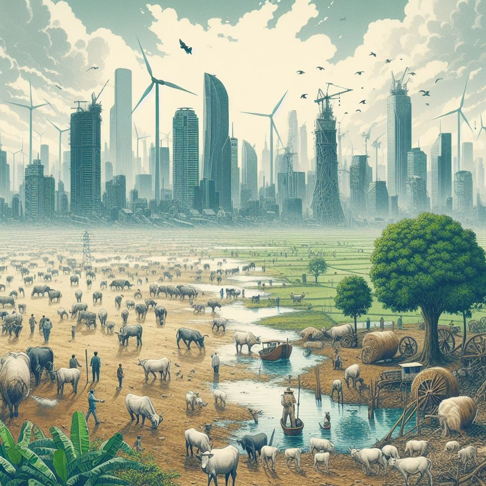

LIFE ON LAND
Heaven is under our feet as well as over our heads.
In nature, nothing is perfect and everything is perfect. Trees can be contorted, bent in weird ways, and they're still beautiful.
we have the opportunity to conserve and restore the terrestrial ecosystems that sustain us and countless other species.
Land, a precious and fundamental resource, forms the very foundation of life on Earth. Beyond being the ground we walk on, land plays a critical role in supporting ecosystems, agriculture, human settlements, and biodiversity.


ISSUES AND THEIR GLOSSES
PROBLEM 1.0
The cutting down of trees and forests for various purposes, such as agriculture, logging, mining, and urbanization.

PROBLEM 2.0
The deterioration of the quality and productivity of land due to human activities, such as overgrazing and overexploitation.